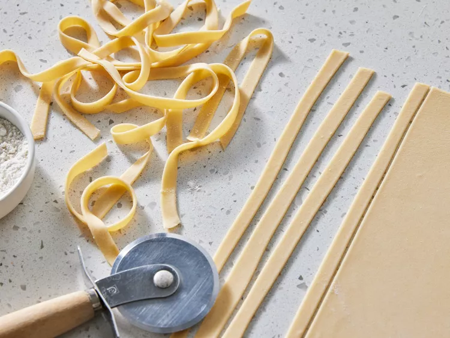

Pasta

Description
Pasta is a type of food typically made from an unleavened dough of wheat flour mixed with water or eggs, and formed into sheets or other shapes, then cooked by boiling or baking.
Ingredients
- 1 cup all-purpose flour
- ½ teaspoon salt
- 1 egg, beaten
- 2 tablespoons water (Optional)
Steps
- Gather all ingredients.
- Combine flour and salt in a medium bowl. Make a well in the center and add beaten egg. Mix well until a stiff dough forms, adding up to 2 tablespoons water if needed.
- Knead dough on a lightly floured surface until smooth, 3 to 4 minutes. Wrap dough and let rest for 30 minutes to 1 hour.
- Roll dough by hand or with a pasta machine to desired thickness, then cut into strips of desired width and length.